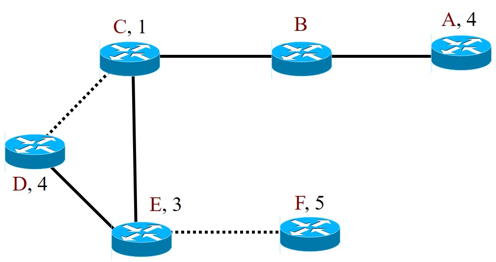
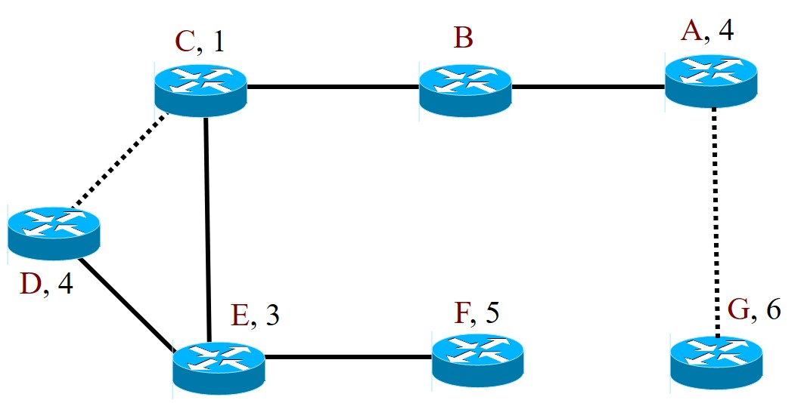

Capítulo 15 Enrutamiento
Recordemos una vez más que la función principal de la capa de red es encontrar una trayectoria por la cual se encaminarán los paquetes desde la fuente hasta su destino. Si tanto el emisor como el receptor se encuentran en la misma red local, el encaminamiento sería responsabilidad de los protocolos de capa 2, como el protocolo Spanning Tree. En la figura 12. llamamos a este encaminamiento entrega directa.
En el caso general, sin embargo, el emisor y receptor se encuentran en distintas redes que están interconectadas (IP, Interconexión de Redes) por medio de enrutadores, que son los dispositivos encargados de encaminar los datagramas desde la red donde se encuentra el emisor hasta la red que hospeda al receptor. Esto se ejemplifica con la trayectoria de entrega indirecta mostrada en la figura 12.
Como se observa en la figura 12, los datagramas pasan de un enrutador a otro a través de distintas redes hasta que llegan al enrutador conectado a la red del destinatario, desde el cual se hará la entrega directa con los mecanismos de la red local del destinatario.
Estos dispositivos emplean tablas llamadas de enrutamiento para encaminar los datagramas. Estas tablas tienen una entrada por cada red de la que conocen por dónde encaminar el datagrama. Junto con otra información que iremos conociendo más adelante, la tabla tiene la dirección IP del enrutador que consituye el siguiente “salto” en la ruta hacia la red del receptor y es a ese enrutador que le entregará el datagrama. Como se mencionó en la seccion 2, si el enrutador no tiene una entrada en la tabla para la red destinataria, el datagrama se envía a un enrutador vecino previamente configurado como el enrutador por omisión (default gateway), quien se encargará de encaminar el datagrama.
Los equipos terminales también tienen una tabla de enrutamiento. Cuando deben transmitir un datagrama, consultan su tabla y si el destinatario se encuentra en la misma red (en la misma dirección de red IP), lo entrega a la capa inferior con la dirección MAC del destinatario. Si el destinatario se encuentra en otra red, entregará el datagrama a la capa inferior con la dirección MAC del enrutador por omisión que tiene configurado y que se encuentra en su misma red.
Las tablas de enrutamiento pueden configurarse manualmente con rutas predefinidas, lo cual se conoce como enrutamiento estático, o bien, con información que intercambian los enrutadores mediante distintos protocolos de enrutamiento. Esta forma, llamada enrutamiento dinámico, es la más común para llenar las tablas de enrutamiento en redes medianas y grandes.
15.1 Enrutamiento estático
El enrutamiento estático se basa en rutas predefinidas y configuradas manualmente por el administrador de la red. Estas rutas permanecen constantes y no cambian a menos que el administrador las modifique. Este tipo de enrutamiento es sencillo y predecible, adecuado para redes pequeñas, donde los cambios en la topología de la red son infrecuentes, o para entradas específicas en la tabla de enrutamiento que no deben modificarse, como la entrada para la ruta por omisión.
En la figura 13 se muestran cinco redes además de la Internet. El enrtudor R1 está conectado a las redes 10.1.0.0/16, 10.2.0.0/16, 10.3.0.0/16 y 10.4.0.0/16. En esta última también está R2, cuya interfaz e1 está conectada a la red 192.168.1.0/24.
Desde R1, se accede a Internet a través de Rx, que está conectado a la red 10.3.0.0/16 en su interfaz e0 con dirección IP 10.3.0.1. Es decir, cualquier datagrama que llega a R1 y que tiene como destino una red que no pertenece a esta organización, debe ser entregado a Rx, que es vecino de R1 en la red 10.3.0.0/16. De forma similar, cualquier datagrama que llegue a R1 cuyo destinatario es un equipo terminal en la red 192.168.1.0/24, debe ser entregado a R2, que también es vecino de R1 en la red 10.4.0.0/16.
Una versión muy simplificada de la tabla de enrutamiento de R1 es la siguiente:
| C | 10.1.0.0/16 directamente conectada, e3 |
|---|---|
| C | 10.2.0.0/16 directamente conectada, e1 |
| C | 10.3.0.0/16 directamente conectada, e2 |
| C | 10.4.0.0/16 directamente conectada, e0 |
| S | 192.168.1.0/24 via 10.4.0.2 |
| S* | 0.0.0.0 via 10.3.0.1 |
En la tabla anterior, las entradas marcadas con C significan que la red está conectada al enrutador a través de alguna de sus interfaces. Estas entradas se añaden automáticamente a la tabla al momento de configurar la interfaz. Si se recibe un datagrama dirigido a la red 10.2.0.0/16, éste se enviará a la interfaz e1 en el que se activan los protocolos de red local para entregarlo al equipo terminal que corresponda.
Las entradas marcadas con S significan que fueron configuradas manualmente (enrutamiento estático) la primera entrada indica que si se recibe un datagrama destinado a la red 192.168.1.0, éste debe ser enviado al vecino 10.4.0.2, es decir, la interfaz e0 de R2, quien se encargará de enviarlo al receptor.
La última entrada también fue configurada manualmente. La dirección 0.0.0.0 es la convención para indicar la ruta por omisión, la cual también se señala en la tabla con el asterisco en S*. Cualquier datagrama para el que no se tiene una resolución en la tabla de enrutamiento, será entregado a Rx en la interfaz 10.3.0.1.
La tabla de enrutamiento para R2 podría ser como la siguiente:
| C | 10.4.0.0/16 directamente conectada, e0 |
|---|---|
| C | 192.168.1.0/24 directamente conectada, e1 |
| S | 10.1.0.0/16 via 10.4.0.1 |
| S | 10.2.0.0/16 via 10.4.0.1 |
| S | 10.2.0.0/16 via 10.4.0.1 |
| S* | 0.0.0.0 via 10.4.0.1 |
De hecho, podría ser mucho más compacta, pues todas las redes, excepto a las que está directamente conectado, se acceden a través de R1 (es su enrutador por omisión):
| C | 10.4.0.0/16 directamente conectada, e0 |
|---|---|
| C | 192.168.1.0/24 directamente conectada, e1 |
| S* | 0.0.0.0 via 10.4.0.1 |
Vamos a agregar un nuevo enrutador R3 entre las redes 10.4.0.0/16 y 192.168.1.0/24 como se muestra en la figura 14. Este enrutador sirve de respaldo en caso de que R2 tenga alguna falla.
En esta red, ese enrutador parece excesivo, pero en redes más complejas en ambientes productivos, es deseable agregar cierto nivel de redundancia para aumentar la disponibilidad de la red. A diferencia de las redes locales, los ciclos que se forman en la topología no son un problema porque los enrutadores no generan “tormentas de tramas” cuando desconocen la dirección del destinatario o cuando reciben tramas de difusión (recordemos que los enrutadores “rompen” los dominios de difusión).
La tabla de enrutamiento para R3 sería la siguiente:
| C | 10.4.0.0/16 directamente conectada, e0 |
|---|---|
| C | 192.168.1.0/24 directamente conectada, e1 |
| S* | 0.0.0.0 via 10.4.0.1 |
Es idéntica a la tabla de R2 simplemente por la ubicación de los dos enrutadores en la topología de la red. Ahora bien, las entradas en la tabla para el enrutamiento estático, se configuran manualmente, lo cual siempre puede ser una fuente de error. Por ejemplo, si en la entrada para la ruta por omisión el administrador hubiera escrito 10.4.0.11 en vez de 10.4.0.1, ningún datagrama que llegue a R3 dirigido a cualquier red a la que no está directamente conectado, podría llegar a su destino.
En nuestra configuración, tenemos otro problema. R3 se añadió como respaldo en caso de que R2 falle; sin embargo, ante una caída de R2, los datagramas que llegan a R1 dirigidos a la red 1922.168.1.0/24, no podrán llegar a su destino porque la ruta (estática) configurada en R1 indica que se deben reenviar a R2. Para que R3 pueda tomar el lugar de R2, el administrador de la red deberá configurar manualmente la nueva ruta: 192.168.1.0/24 via 10.4.0.3. Para redes pequeñas como la mostrada en el ejemplo, esto sería lento pero factible; en redes de mediana complejidad, la configuración manual es inviable.
En resumen, si bien el enrutamiento estático es sencillo y puede resultar adecuado en redes pequeñas o para rutas específicas en las que los cambios son muy infrecuentes, tiene varias limitaciones, entre las que sobresalen:
Es propenso a errores humanos, sobre todo en redes medianas y grandes en las que se requeriría de configuraciones manuales con mucha frecuencia
No se adapta ante cambios en la topología o ante fallos en la red.
15.2 Enrutamiento dinámico
El enrutamiento dinámico utiliza algoritmos y protocolos para ajustar automáticamente las tablas de enrutamiento en función de las condiciones actuales de la red. Los protocolos de enrutamiento dinámico recopilan y comparten información de la red entre los enrutadores para determinar la mejor trayectoria disponible. Este enfoque es más adecuado para redes grandes y complejas, donde la topología puede cambiar con frecuencia debido a la adición o eliminación de dispositivos, cambios en el tráfico de la red o fallos en los enlaces.
Existen dos grandes familias de protocolos de enrutamiento dinámico: enrutamiento interno (IGP, Internal Gateway Protocol) y enrutamiento externo (EGP, External Gateway Protocol), pero para poder distinguirlas, es necesario introducir el concepto de Sistemas autónomos.
15.2.1 Sistemas autónomos
Hemos comentado en repetidas ocasiones que Internet es una red formada por la interconexión de redes -una red de redes-, aunque administrativamente es más apropiado afirmar que se trata de una interconexión de sistemas autónomos como se muestra en la figura 15.
Un sistema autónomo (AS, Autonomous System), es un conjunto de redes IP bajo el control de una misma autoridad administrativa. Esta autroidad es la responsable de asignar direcciones, las políticas de tarificación, la seguridad y la organización de los dominios y políticas de enrutamiento al interior del sistema autónomo.
Esas políticas de enrutamiento se implementan con la primera familia de protocolos: los protocolos de enrutamiento interno. Como veremos en un momento, su principal función es establecer trayectorias -presumiblemente óptimas- para encaminar datagramas dentro de su AS. Esa es la función de los enrutadores de color azul mostrados en la figura 15. Estos protocolos permiten que los enrutadores dentro de un AS intercambien información de enrutamiento para mantener una visión coherente y actualizada de la topología de la red.
Los AS tienen un identificador único de 16 bits (ASN, Autonomous System Number) asignado por autoridades como LACNIC en América Latina y RIPE en Europa. Se interconectan entre sí mediante las redes de los Proveedores de acceso a Internet (ISP, Internet Service Providers) e intercambian información de ruteo mediante la segunda familia de protocolos: enrutamiento externo. Estos protocolos son implementados por los enrutadores en la frontera de los AS, como se indica con los enrutadores de color rojo en la figura 15. Estos enrutadores comparten la información sobre las rutas disponibles y seleccionan -con base en sus propias políticas- cuáles son las mejores rutas para encaminar el tráfico a través de múltiples AS hasta su destino.
15.3 Protocolos de enrutamiento interno
Los protocolos de enrutamiento interno (IGP) son esenciales para gestionar el enrutamiento de datagramas dentro de un único sistema autónomo. Estos protocolos permiten que los enrutadores dentro del AS intercambien información sobre la topología de la red y determinen las rutas más eficientes para el tráfico de datos.
Existen muchos protocolos de enrutamiento interno; casi todos ellos caen dentro de dos grandes categorías: Vector de distancia y Estado de enlace.
15.3.1 Enrutamiento interno - Vector de distancias
Los algoritmos utilizados en los protocolos de Vector de distancia son los más simples y fueron diseñados para redes pequeñas. En ellos, cada enrutador intercambia información con sus vecinos, es decir, con los enrutandores con los que tiene un enlace directo (están en la misma red local).
Se define una métrica de costo, típicamente proporcional a la estimación de la distancia hacia cada destino posible (cada red) en el AS, como el retardo medio o el número de “saltos” entre enrutadores hasta llegar al destinatario. Esta última métrica es utilizada por RIP, uno de los protocolos de vector de distancia más antiguos y más utilizados; por ello, es común escuchar (incorrectamente) que en los protocolos de vector de distancia la métrica es el número de saltos.
Los enrutadores difunden periódicamente a sus vecinos una tabla o “vector de distancias” que contiene las redes que conoce hasta el momento y el costo de llegar a ellas a través de él. Cuando reciben estos vectores, los enrutadores ejecutan el Algoritmo de Bellman-Ford para cada entrada en la tabla: - Si desconoce la red, la añade a su tabla de enrutamiento con un costo igual al anunciado por el vecino, más uno: el “salto” que implica entregar el datagrama a ese vecino para que éste lo acerque al destino final. - Si el costo de la ruta recibida es menor que el que tiene en su tabla de enrutamiento, modifica la tabla de enrutamiento para tomar en cuenta la nueva ruta. - De lo contrario, se ignora esa entrada.
Inicialmente, un enrutador sólo conoce las redes a las que está directamente conectado y con ellas forma un vector de distancias con un costo de 1 para todas esas redes. Poco a poco ira recibiendo información actualizada sobre la topología de la red y con base en ella se formará la tabla de enrutamiento de menor costo hacia todas las redes.
Veamos estos conceptos en el ejemplo de la figura 16 para el enrutador R1 que tiene como vecinos a R2, R3 y R4, utilizando como métrica el número de saltos.
En algún momento, recibe de R2 el vector de distancias \([1, 1, 2, 3, 3, 2]\), para las redes 1.0 a 6.0 respectivamente. El vector se interpreta así:
Si R2 recibe un datagrama destinado a un dispositivo en las redes 1.0 o 2.0, lo entrega en un salto (directamente al destinatario) pues está conectado a esas redes.
Si es para la red 3.0, lo entrega en dos saltos, ya sea de R2 a R4 y de ahí al destinatario, o de R2 a R y de ahí al destinatario.
Si es para la red 4.0, lo entrega en tres saltos: \(R4\rightarrow R3\rightarrow \text{destinatario}\), o \(R1\rightarrow R3\rightarrow \text{destinatario}\).
Si es para la red 5.0, lo entrega en tres saltos: \(R4\rightarrow R5\rightarrow \text{destinatario}\).
Si es para la red 6.0, lo entrega en 2 saltos: \(R4\rightarrow \text{destinatario}\).
De su vecino R3 recibe el siguiente vector de distancias: \([2, 2, 1, 1, 2, 2]\) y de R4, el vector \([2, 1, 1, 2, 2, 1]\).
Con base en la información recibida, R1 tiene para su consideración las siguientes distancias, sumando 1 a los costos de los vectores recibidos, para reflejar el costo de entregar un datagrama a alguno de sus vecinos y que éste lo aproxime a su destinatario:
| Red | R1 via e1 | R3 via e2 | R4 via e2 |
|---|---|---|---|
| 1.0 | 2 | 3 | 3 |
| 2.0 | 2 | 3 | 2 |
| 3.0 | 3 | 2 | 2 |
| 4.0 | 4 | 2 | 3 |
| 5.0 | 4 | 3 | 3 |
| 6.0 | 3 | 3 | 2 |
Para construir su tabla de enrutamiento, R1 tomará las alternativas de menor costo; en caso de empate, puede tomar cualquiera de ellas. Así, la tabla de enrutamiento de R1 podría ser la siguiente (se añaden campos para que el ejemplo quede más claro):
| Red | Sig. salto | Interfaz | Distancia |
|---|---|---|---|
| 1.0 | Directo | e1 | 1 |
| 2.0 | 1.2 (R2) | e1 | 2 |
| 3.0 | Directo | e2 | 1 |
| 4.0 | 3.2 (R3) | e2 | 2 |
| 5.0 | 3.2 (R3) | e2 | 3 |
| 6.0 | 3.3 (R4) | e2 | 2 |
En la red de la figura 16 se indican con las flechas rojas los dos saltos que tomaría un datagrama que llega a R1, dirigido a la computadora 4.3.
Si en algún momento algún enrutador, por ejemplo R3, tuviera una falla, dejaría de enviar su vector de distancias y R1 reconfiguraría su tabla de enrutamiento con base en la información recibida por sus otros vecinos (R2 y R4).
Si bien los protocolos basados en vector de distancia son muy sencillos de implementar y administrar, presentan ciertas limitaciones, como la convergencia lenta (es decir, el tiempo que toma a todos los enrutadores configurar sus tablas -óptimas- de enrutamiento) y la posibilidad de que se formen “lazos” ante la caída de un enrutador, que aumentan el tiempo de convergencia.
El problema de convergencia
Considere la red de la figura 17. Si los protocolos de enrutamiento ya han convergido, la tabla de enrutamiento para R sería:
| Red | Sig. salto | Distancia |
|---|---|---|
| 10.0.0.0 | 20.0.0.5 | 2 |
| 20.0.0.0 | Directa | 1 |
| 30.0.0.0 | Directa | 1 |
| 40.0.0.0 | 30.0.0.7 | 2 |
En un momento dado, Q falla y deja de enviar su vector de distancias. Al no recibir la actualización de Q, R borraría la entrada a la red 10.0.0.0, que la hace inaccesible desde R.
Sin embargo, S enviará su vector de distancias donde indica que sabe llegar a la red 10.0.0.0 con un costo de 3; entonces, R tomará esa indicación como válida y pondrá en su tabla de enrutamiento una entrada para llegar a esa red a través de S, con un costo de 4. Cuando R envíe su vector de distancias a S, este enrutador actualizará su entrada para la red 10.0.0.0 con un costo de 5, y así sucesivamente.
Este problema, llamado de cuenta al infinito se muestra en la figura 18 y haría que la red nunca converja.
Ruta inalcanzable
Una forma de resolver este problema, es limitar la distancia máxima (o el máximo número de saltos) entre dos redes. Por ejemplo, en el protocolo RIP que se presenta más adelante, la distancia máxima es de 15. Un valor de distancia de 16, significa que se trata de una ruta inalcanzable. Esto no suele ser un problema si se considera que estos protocolos sólo deben implementarse en redes pequeñas.
Horizonte dividido
Otra solución para acelerar la convergencia consiste en impedir que un enrutador anuncie una ruta al vecino del que la aprendió, evitando así la cuenta al infinito. En nuestro ejemplo, S no incluirá en el vector de distancias que le envía a R el costo para llegar a la red 10.0.0.0, pues esa ruta la aprendió de información que R le había enviado previamente.
Ruta envenenada
La técnica de horizonte dividido únicamente resuelve los problemas de lazos directos pero no puede impedir lazos en otras topologías. Por ejemplo, en la red de la figura 19, cuando R detecta que Q dejó de enviar su vector de distancias, borra la entrada a la red 10.0.0.0 en su tabla de enrutamiento y ni S ni T enviarán información sobre la red 10.0.0.0 en los vectores de distancias que le enviarán a R.
Sin embargo, T sí enviará un anuncio a S (a través de la red 40.0.0.0) indicando que sabe llegar a la red 10.0.0.0 con un costo de 3 pues es una ruta que no aprendió de S. S actualizará su tabla de enrutamiento y ahora le envíará un anuncio a R indicándole que sabe cómo alcanzar la red con un costo de 4,
Este problema puede mitigarse si cuando R detecta la posible falla de Q, en vez de eliminar la entrada de la red 10.0.0.0 en su tabla, le pone un costo infinito (16 en RIP) y anuncia ese costo en su vector de distancias. Cuando S y T reciben ese vector, automáticamente ponen la ruta a la red 10.0.0.0 como inalcanzable. A esta técnica se le conoce como ruta envenenada.
Retención de camino
La retención de camino (hold down) es una técnica adicional utilizada para estabilizar la red en presencia de cambios de topología y para prevenir la propagación de información incorrecta de enrutamiento. Cuando un enrutador detecta que una ruta ya no es válida, entra en un período de retención durante el cual ignora cualquier actualización de enrutamiento que sugiera que la ruta problemática se ha restaurado, a menos que venga de la fuente original de la ruta.
RIP
RIP (Routing Information Protocol) es uno de los protocolos de enrutamiento interno más antiguos y ampliamente utilizados. Fue adoptado por IP a principios de los años 80 y formalizado en el RFC 1058 en 1988.
Está basado en el algoritmo de vector de distancia y, como se ha mencionado, utiliza la métrica del número de saltos para determinar la mejor ruta hacia un destino. Los enrutadores envían a sus vecinos su vector de distancia cada 30 segundos por default, aunque este valor puede modificarse. Si un vector no se recibe después de 180 segundos (seis pérdidas del anuncio del vector de distancia, aunque también este valor se puede modificar), se asume que el vecino ha fallado y las rutas aprendidas a través de él se marcan como inalcanzables con el valor de distancia infinita, que para RIP es de 16 saltos.
Los mensajes RIP se encapsulan en datagramas UDP en el puerto 520. A pesar de que se trata de un protocolo de enrutamiento, el algoritmo se ejecuta en la capa de aplicación, lo que consume tiempo de procesamiento del enrutador.
El formato del mensaje RIP se muestra en la figura 20. En un mensaje se pueden enviar hasta 25 entradas del vector de distancia. Si el vector tiene más entradas, se utilizan varios mensajes RIP.
El campo comando puede ser 1 si es una solicitud (algún nodo solicita el vector de distancias) o 0, el valor más común, cuando el enrutador envía su vector de distancias.
La versión debe ser 1; existe una versión 2 que se presenta más adelante.
El identificador de familia debe ser 2, que es el valor reservado para IP. RIP no se ha utilizado en ningún otro tipo de red.
La dirección IP contiene una dirección de red, por ejemplo, 148.205.0.0. También podría contener una dirección de subred, pero como RIPv1 no entiende de máscaras de red, esto sólo puede funcionar si en todo el SA existe una configuración local de máscara de red
El costo, en RIP, es el número de saltos para llegar a ese destino.
15.3.1.1 RIPv2
En 1994 se publica en el RFC 1723 una actualización del protocolo RIP, RIPv2, que ofrece más funcionalidades manteniendo la compatibilidad con RIPv1. Entre los cambios más importantes introducidos en esta versión destacan:
RIPv2 entiende de subredes. Además de la dirección IP se envía una máscara, por lo que se puede utilizar CIDR y VLSM.
Utiliza la dirección multicast 224.0.0.9 para no sobrecargar a los demás nodos con mensajes que no les conciernen, como ocurre con RIPv1, que utiliza direcciones de difusión. Los enrutadores RIPv1 no podrán procesar los mensajes de RIPv2, pero RIPv2 sí puede recibir y procesar mensajes RIPv1.
Soporta autenticación, lo que lo hace más seguro que RIPv1. La autenticación consiste en firmar digitalmente los mensajes con un compendio (hash) MD5 (RFC 2082) o SHA1 (RFC 4822, recomendado).
El formato del mensaje RIPv2 se muestra en la figura 21. En un mensaje se pueden enviar hasta 25 entradas del vector de distancia. Si el vector tiene más entradas, se utilizan varios mensajes RIP.
El campo comando se mantiene igual que en la versión 1.
La versión debe ser 2.
El dominio de enrutamiento contiene un número del plan de enrutamiento. Con ello, dentro de la misma red local se pueden asignar distintos planes de enrutamiento. Los enrutadores sólo atenderán mensajes que tienen el mismo dominio de enrutamiento, lo que permite una partición lógica a nivel capa 3. Esto aumenta la escalabilidad de la red. Si el campo es cero, todos los enrutadores comparten la misma información.
La etiqueta de ruta permite distinguir entre rutas aprendidas internamente y rutas recibidas desde otros dominios (por ejemplo, en número de SA que anuncia esas rutas)
La dirección de red ahora puede tener cualquier prefijo IP. La máscara de red que determina la longitud del prefijo, se indica en el siguiente campo.
El siguiente salto indica el “vecino” que será insertado en la tabla de enrutamiento del destinatario. Por regla general, se trata de la dirección IP del emisor del vector de distancias.
El campo de costo se mantiene igual que en la versión 1.
15.3.2 Enrutamiento interno - Estado de enlace
Ya se han comentado varias de las limitaciones de los protocolos de vector de distancia en general, así como de RIP en particular. La más importante es la posible formación de lazos de enrutamiento que ralentizan su convergencia. Para evitar esos lazos, es necesario que cada enrutador tenga una vista completa de la topología de la red a partir de la cual pueda construir sus tablas de enrutamiento. Esa es la idea detrás de los protocolos de estado de enlace.
En términos generales, los enrutadores descubren y mantienen información detallada sobre el estado de cada enlace en la red mediante la transmisión de paquetes anunciando el estado de los enlaces (LSAs, Link State Advertisements). Con esta información, cada enrutador construye un gráfico de la red que se emplea para calcular las rutas óptimas.
Debido a que cada enrutador tiene una vista completa y precisa de la topología de la red, puede responder rápidamente a los cambios en el estado de los enlaces, recalculando las rutas y difundiendo esta nueva información eficientemente. Esta capacidad de adaptarse rápidamente a las condiciones cambiantes de la red es particularmente beneficiosa en entornos grandes y dinámicos, donde la estabilidad y la eficiencia del enrutamiento son cruciales.
Así, el enrutamiento de estado de enlace ofrece varias ventajas clave, como una convergencia rápida, el no cargar a la red con mensajes innecesarios pues los anuncios de estado de enlace solo se generan cuando hay cambios en la topología, y con todo ello, una mejor escalabilidad.
OSPF
OSPF (Open Shortest Path First) es uno de los protocolos de enrutamiento de estado de enlace más utilizados y confiables en redes IP y es en el que se basan estas notas. Para calcular las rutas más cortas y óptimas, utiliza una métrica de costo que, típicamente, es inversamente proporcional a la velocidad de los enlaces.
Una característica distintiva de OSPF es su capacidad para dividir una red en áreas o zonas, mejorando la escalabilidad y reduciendo la sobrecarga de procesamiento en grandes redes. En principio, un área no debe tener más de 50 enrutadores. Los enrutadores dentro de una misma área intercambian información de estado de enlace, mientras que los los que se encuentran en la frontera de un área (ABR, Area Border Router) intercambian entre ellos resúmenes de la información del área que les corresponde. La figura 22 muestra una red con tres áreas.
En OSPF, siempre debe existir un área 0 llamada de Backbone y todas las demás áreas deben estar conectadas al área 0 a través de sus ABR. Se llama enrutadores internos a aquellos que tienen todas sus interfaces dentro de un área. Tienen la misma base de datos de Estado de Enlace. También existen los llamados enrutadores de Borde de Sistema Autónomo (ASBR), que interconectan al Sistema Autónomo con otro AS redistribuyendo entre ellos información de enrutamiento.
Principio de operación
OSPF es un protocolo complejo, que se resume brevemente en la figura 23. Opera mediante la creación y mantenimiento de una base de datos de estado de enlace (LSDB, Link State Data Base) que contiene información sobre todos los enrutadores y enlaces en la red (en el área). Esta base de datos se genera con base en la información recibida en los LSA de los enrutadores vecinos. A partir de la LSDB, se calculan las trayectorias óptimas (las de menor costo) mediante el algoritmo SPF (Shortest Path First) propuesto por Dijkstray se construye la tabla de enrutamiento.
El primer paso en la operación de OSPF es el descubrimiento de vecinos, donde los enrutadores adyacentes se identifican y establecen una relación de vecindad utilizando paquetes Hello. Estos paquetes se envían periódicamente para mantener la relación de vecindad y detectar fallos en los enlaces.
Cada enrutador determina el costo de sus enlaces con base en la métrica elegida por el administrador de la red. Como se ha mencionado, esta métrica es típicamente inversamente proporcional a la velocidad del enlace, aunque pueden utilizarse otras métricas relacionadas con la calidad de servicio como el retraso medio.
Los LSA contienen información de los enlaces y su costo asociado; se envían mediante un protocolo de inundación, asegurando que todos los enrutadores tengan la información de todos los enlaces.
Algoritmo SPF
Algoritmo propuesto por Dijikstra, tiene como objetivo encontrar la trayectoria de menor costo entre dos nodos (en este caso entre dos enrutadores). Si bien todos los enrutadores en el área eventualmente tendrán la misma LSDB, cada enrutador tendrá una tabla de enrutamiento distinta generada a partir del protocolo SPF colocándose él como la raíz del árbol.
Para ejemplificar la operación del algoritmo, utilizaremos la red de la figura 24 para calcular la tabla de enrutamiento del enrutador B. Cada enrutador en la figura tiene un identificador y cada linea que une a cada par de enrutadores representa un enlace con su costo asociado. Por ejemplo, el enlace que conecta a los enrutadores D y C tiene un costo de cuatro.

Para encontar la ruta mas corta entre pares de ruteadores (en este caso desde el ruteador B a los demás ruteadores) el algoritmo encuentra la trayectoria de menor costo. El algoritmo utiliza dos estructuras con tuplas de identificación de enrutador, costo y nodo de salida. La estructura llamada TRAYECTORIA, contiene las rutas con costos mínimos para alcanzar a un determinado enrutador. La estructura llamada ALTERNATIVAS, contiene rutas alternativas que aún no han sido consideradas. Cuando esta estructura está vacía, el algoritmo ha terminado y la tabla de enrutamiento se forma a partir de la información en la estructura TRAYECTORIAS.
Tras la difusión de los LSA entre vecinos, cada enrutador tendrá la siguiente información:

Los vecinos inmediatos de B se colocan en la estructura ALTERNATIVAS: <C, 1, C>, <A, 4, A> Las tuplas se leen como <Identificador, Costo, Vecino>.
Como de las alternativas, la tupla hacia C es la de menor costo, ésta se pasa a la tupla de TRAYECTORIAS. Hasta el momento, el árbol con los caminos más cortos (de menor costo) es el de la figura 26. La línea fija muestra entradas seleccionadas, y la punteada, las entradas alternativas.
 Árbol de menor costo tras la primera iteración de SPF aplicado al enrutador B.
Árbol de menor costo tras la primera iteración de SPF aplicado al enrutador B.Dado que C fue seleccionado, ahora se agregan a la estructura ALTERNATIVAS los vecinos de C; la estructura resultante es: <A, 4, A>, <D, 5, C>, <E, 3, C>. Hemos añadido el costo del enlace B-C (1) a los costos de los vecinos de C.
Ahora se pasa a la estructura de TRAYECTORIAS la tupla hacia E vía
 Árbol de menor costo tras la segunda iteración de SPF aplicado al enrutador B.
Árbol de menor costo tras la segunda iteración de SPF aplicado al enrutador B.Se repite el proceso añadiendo a ALTERNATIVAS los vecinos de E: <A, 4, A>, <D, 5, C>, <D, 4, C>, <F, 5, C>. Las tuplas <A, 4, A> y <D, 4, C> se pasan a la estructura TRAYECTORIAS; la última tupla sustituye a la alternativa que se tenía para alcanzar a D, que era más costosa. El árbol hasta ahora es:
Árbol de menor costo tras la tercera iteración de SPF aplicado al enrutador B.Ahora se añaden a ALTERNATIVAS los vecinos faltantes de A: <F, 5, C>, <G, 6, A>. Se pasa a TRAYECTORIAS la tupla hacia F, dejando el siguiente árbol:
Árbol de menor costo tras la cuarta iteración de SPF aplicado al enrutador B.Se añaden los vecinos de F a ALTERNATIVAS: <G, 6, A>, <G, 7, C>. Efectivamente, tenemos dos rutas para llegar a G y se pasa a TRAYECTORIAS la de menor costo. Con ello, la estructura ALTERNATIVAS ha quedado vacía y el protocolo ha terminado dejando el siguiente árbol:
 Árbol de menor costo al final del algoritmo SPF aplicado al enrutador B.
Árbol de menor costo al final del algoritmo SPF aplicado al enrutador B.
15.3.2.1 Protocolo OSPF
A diferencia de RIP, OSPF no utiliza encapsulación de capa 4 (TCP, UDP); se trata auténticamente de un protocolo que opera en la capa 3, sus mensajes se transportan en datagramas IP y se reconocen por el valor 89 en el campo de tipo de protocolo.
Al igual que RIPv2, en redes de difusión, como las redes LAN, utiliza direcciones multicast para comunicarse con sus vecinos. La dirección 224.0.0.5 se utiliza para comunicarse con todos los enrutadores en la red y la dirección 224.0.0.6 para comunicarse con los enrutadores designados, que se presentan más adelante.
El formato de los paquetes OSPF se muestra en la figura 31.
.
Versión. El primer campo, de ocho bits, contiene la versión del protocolo. La versión actual para IPv4 es la 2 y para IPv6, la 3.
Tipo de paquete. Este campo, de ocho bits, identifica cinco posibles tipos de paquete. Los distintos tipos se describen en los siguientes párrafos. Pueden ser:
HELLO.- Sirve para descubrir y mantener relación con los vecinos.
Database Description.- Describe el conjunto de LSAs contenidos en la base de datos.
Link State Request.- Permite solicitar instancias de LSAs.
Link State Update.- Provee descripción detallada de los LSAs.
Link State Acknowledgement.- Acuse de recibo de un LSA.
Longitud total. Indica la longitud total del datagrama: Encabezado y datos. Este campo es de 16 bits.
ID del enrutador Este campo, de 32 bits, contiene el identificador del enrutador que ha emitido el paquete. Generalmente se utiliza la dirección IP más baja del enrutador.
ID del área. Es un campo de 32 bits que indica el área en la que el paquete está activo.
Checksum. Campo de 16 bits para verificar la integrudad del encabezado.
Tipo de autenticación. Campo de 16 bits únicamente válido para la versión 2 de OSPF, indica el algoritmo de autenticación utilizado:
0.- No se utiliza autenticación
1.- Autenticación con base en contraseña (que se transmite sin encripción)
2.- Autenticación basada en firma digital utilizando algoritmos como MD5 o SHA256.
Datos de autenticación. Si el tipo de autenticación no es cero, este campo, de 64 bits, contiene los datos de autenticación según el mecanismo de autenticación utilizado.
Paquetes HELLO
Los paquetes HELLO se emiten periódicamente, por omisión cada 10 segundos, y permiten asegurar que el equipo que lo envía (y, obviamente el enlace por el que se recibe), sigue activo. Cuando se dejan de recibir estos mensajes durante un cierto intervalo (por omisión, cuatro periodos de mensajes Hello, es decir, 40 segundos), se considera que el enrutador ha dejado de funcionar y se inicia un proceso para reconfigurar la tabla de enrutamiento.
Los paquetes Hello también se utilizan cuando se activa un enrutador en la red para encontrar a sus vecinos y poder intercambiar información con ellos. En la figura 32, el enrutador A se inicia y envía un mensaje HELLO por sus interfaces.
Al recibir este mensaje, el enrutador B añade a A a su tabla de vecinos y responde con otro mensaje HELLO con la información de otros vecinos de B.
Cuando A recibe este mensaje, añade B y su lista de vecinos a su propia tabla.En este punto, los ruteadores pueden iniciar comunicación bireccional para intercambiar información de estado de enlace.
Elección de enrutador designado
En redes de difusión, como las redes locales, resultaría muy ineficiente que todos los enrutadores intercambien información entre sí para mantener actualizadas sus bases de datos. En estas configuraciones, se elige un enrutador designado (DR, Designated Router). Los demás enrutadores en la red local sólo se comunican con él para intercambiar información. Por ejemplo, en caso de un cambio en el estado de un enlace), el enrutador correspondiente envía esta actualización al DR y éste la reenvía a todos los enrutadores en la red.
Se elige como DR a aquél que tenga el valor de prioridad más grande. Se trata de un parámetro configurado por el administrador. En caso de empate, se elige al enrutador con el identificador más grande.
También se elige un segundo enrutador llamado de respaldo (BDR, Backup Designated Router) cuya función es verificar que el DR esté activo; en caso de que detecte un fallo, tomará el rol de DR en la red y se eligirá un nuevo BDR.
Descubrimiento de rutas y actualización de información
Periódicamente el DR envía la descripción de su base de datos que incluyen los vecinos que conoce, su costo y un número de secuencia. Los vecinos comparan esta información con la que tienen; en caso de detectar una diferencia, se envía un mensaje LS Request solicitando información detallada de los cambios detectados. El DR responde con la información solicitada en un mensaje LS Update. La correcta recepción de todos estos mensajes se controla a través de paquetes de acuse de recibo, LSAck. Estos intercambios se muestran en la figura 33.

15.4 Protocolos de enrutamiento externo
Como se ha mencionado, Internet está conformada la interconexión de múltiples sistemas autónomos (SA) administrados de manera independiente. Es necesario contar con mecanismos que permitan coordinar el flujo de paquetes sin problemas entre estos SA. Esa es la función de los protocolos de enrutamiento externo (EGP, External Gateway Protocol)
A diferencia de los protocolos de enrutamiento interno, cuyo objetivo es optimizar las rutas al interior de un SA y asegurar la rápida convergencia ante cambios en la topología, los protocolos EGP necesitan lidiar con la transmisión eficiente de datos a través de las fronteras administrativas que representan los distintos SA.
Los protocolos EGP deben lidiar con una mayor escala y heterogeneidad en comparación con los protocolos IGP. Mientras que éstos se encargan de rutas dentro de una única organización, un EGP debe gestionar rutas que abarcan múltiples organizaciones, cada una con sus propias políticas y estructuras de red. Esto requiere que los EGP sean extremadamente flexibles y robustos, capaces de manejar un gran número de rutas y adaptarse a diversas políticas de enrutamiento. Esta flexibilidad y robustez son esenciales para mantener la estabilidad y la eficiencia de Internet a nivel global.
Los protocolos EGP son protocolos basados en políticas, es decir que las decisiones de encaminamiento no consisten en encontrar una ruta óptima sino una ruta que cumpla con las preferencias y restricciones de los administradores de los SA.
Para ejemplificar lo anterior, consideremos la red de la figura 34 que simboliza un subconjunto de la Internet. Los sistemas autónomos SA A, B y C representan redes de tres organizaciones distintas. Los sistemas autónomos SA T1, T2, T3, T4 y T5, representan redes de transporte de datos o proveedores de acceso a Internet (ISP, Internet Service Provider).

El SA A tiene dos salidas a Internet; se trata de una red multiconectada (multihommed). Hay varios retos de enrutamiento que se presentan para este sistema autónomo; entre ellos:
Tiene que decidir cómo anuncia sus propias redes al resto de Internet, a través de SA T3, o de SA T1, o si conviene hacer un balance de tráfico y anunciar algunas redes a través de cada ISP
Si SA T3 tiene tráfico que debe enviar a SA C, por ejemplo, debe evitar que ese tráfico cruce a través de sus propias redes. SA T3 podría tratar de hacer eso para evitar posibles cargos que SA T1 (una red de transporte) pudiera hacerle por cruzar ese tráfico.
Si tiene tráfico que debe enviar a un cliente de SA T4 pero quiere evitar que ese tráfico cruce redes de SA T5 (quizás se trata de redes de un competidor), debe ser capaz de seleccionar trayectorias que no pasen por ese sistema autónomo.
Los protocolos EGP deben ser capaces de satisfacer estas y otras restricciones. Las decisiones de enrutamiento no están basadas en métricas para optimizar trayectorias, sino en criterios de negocio, políticos, de confiabilidad, de seguridad entre otros..
15.4.1 BGP. Características generales
La cuarta versión de BGP (Border Gateway Protocol), BGP-4, definida en el RFC 1771, es el protocolo de enrutamiento externo más utilizado en Internet. Su principal función es intercambiar información de enrutamiento entre sistemas autónomos, permitiendo que los datos encuentren la mejor ruta posible para llegar a su destino. Una de las características distintivas de BGP es su capacidad para manejar grandes volúmenes de rutas, lo que es crucial para la operación de la red global de Internet.
BGP opera en la capa de aplicación y utiliza TCP como protocolo de transporte para garantizar una entrega fiable de mensajes entre los enrutadores. Los mensajes BGP utilizan el puerto 179 de TCP. Entiende de prefijos de red, por lo que puede sumarizar rutas y así reducir la cantidad de información intercambiada.
El intercambio de información se asemeja un poco a los algoritmos de vector de distancias, pero la información intercambiada se refiere a SAs y a “alcanzabilidad” de rutas, no a alguna métrica, por lo que se dice que este protocolo utiliza un algoritmo de Vector de Rutas.
Principio de operación
El funcionamiento de BGP se basa en el intercambio de información de enrutamiento entre pares de enrutadores llamados vecinos o peers. Estos pares establecen una conexión TCP entre sí y utilizan esta conexión para intercambiar mensajes de actualización que contienen información sobre las rutas que cada uno conoce. El proceso de establecimiento de la conexión y el intercambio de mensajes es fundamental para la operación de BGP y se conoce como la formación de una sesión BGP.
Una vez establecida la sesión BGP, los enrutadores intercambian mensajes de actualización que contienen anuncios de rutas. Cada anuncio incluye una serie de atributos que describen la ruta, como el prefijo de la red, la longitud del prefijo, la lista de SA por los que la ruta ha pasado (AS_PATH), y otros atributos relevantes. Estos atributos permiten a los enrutadores BGP no solo conocer las rutas disponibles, sino también tomar decisiones informadas sobre la mejor ruta a utilizar, basándose en las políticas de enrutamiento configuradas. En términos generales, el flujo se describe en la figura 35.
Las actualizaciones de ruteo son recibidas de otros enrutadores BGP. El módulo de políticas de entrada filtra las rutas y realiza manipulación de los atributos. El proceso de decisión determina qué rutas de BGP serán usadas. El módulo de políticas de salida filtra las rutas y realiza la manipulación de atributos de las rutas que serán anunciadas. Las actualizaciones de ruteo son anunciadas a otros enrutadores BGP.
El proceso de selección de rutas en BGP es un aspecto crítico de su operación. Cuando un enrutador BGP recibe múltiples anuncios para la misma red de destino, debe decidir cuál de estas rutas utilizar. Este proceso de selección se basa en una serie de reglas predefinidas que consideran los atributos de las rutas. Por ejemplo, una de las reglas más importantes es la longitud del AS_PATH: en general, BGP prefiere rutas con un AS_PATH más corto, ya que esto indica menos saltos entre sistemas autónomos. Sin embargo, las políticas de enrutamiento pueden modificar este comportamiento para cumplir con los objetivos específicos de la red.
A cada SA se le asigna un peso y la ruta preferida al destino es aquella con el menor peso agregado. BGP debe de incluir una política para excluir un SA de todas las posibles trayectorias; esto se logra asignando un peso de infinito a un SA.
15.4.1.1 Componentes
BGP consta de varios componentes clave que trabajan juntos para proporcionar sus funcionalidades de enrutamiento. Los más importantes se muestran en la figura 36. Estos componentes incluyen los enrutadores, las sesiones BGP, los mensajes BGP y las tablas de enrutamiento.

Los enrutadores BGP son los dispositivos que ejecutan el protocolo BGP y se encargan de intercambiar información de enrutamiento con otros enrutadores. Estos pueden estar ubicados en diferentes sistemas autónomos y deben estar configurados para establecer sesiones BGP entre sí. La configuración de los enrutadores BGP incluye la definición de las políticas de enrutamiento, la selección de vecinos BGP y la gestión de las sesiones BGP. Un enrutador que establece una sesión BGP se conoce como BGP Speaker.
Las sesiones BGP permiten el intercambio de mensajes BGP y son esenciales para la operación del protocolo. Hay dos tipos principales de sesiones BGP: sesiones internas (iBGP), que se establecen entre enrutadores BGP dentro del mismo sistema autónomo, y sesiones externas (eBGP), que se establecen entre enrutadores BGP en diferentes sistemas autónomos. Las sesiones iBGP y eBGP tienen diferentes reglas y comportamientos que influyen en cómo se propaga la información de enrutamiento.
Formato de los paquetes
Los mensajes BGP son las unidades de información que se intercambian entre los enrutadores BGP. Hay varios tipos de mensajes BGP, incluyendo mensajes de apertura, actualización, notificación y keepalive. Los mensajes de apertura se utilizan para establecer una sesión BGP, mientras que los mensajes de actualización contienen información sobre las rutas y sus atributos. Los mensajes de notificación se utilizan para indicar errores, y los mensajes keepalive se envían periódicamente para mantener activa la sesión BGP.
El mensaje de apertura (figura 37) es el primero que se envía cuando se establece una sesión BGP. Este mensaje incluye información esencial como la versión del protocolo BGP, el número de sistema autónomo del remitente, el tiempo de espera (hold time) y el identificador BGP (una dirección IP única del enrutador BGP). La recepción de un mensaje de apertura correcto establece la sesión BGP y permite que los enrutadores comiencen a intercambiar información.

Todos los mensajes BGP consisten de un encabezado común mas el contenido específico del paquete. Este encabezado permite resincronizar los flujos (que vienen en segmentos TCP) cuando sea necesario, e identificar el tipo de mensaje que se está transmitiendo.
Si no se recibe ningún tipo de mensaje dentro del tiempo de hold time, el enrutador asume una condición de error, envía una notificación y cierra la conexión. Se recomienda que se envíen mensajes keepalive cada 40 segundos y que el hold time sea de 90 segundos.
El mensaje de apertura provee parámetros opcionales que pueden ser usados para autenticar al vecino BGP. Una aceptación del mensaje open se reconoce mediante la recepción de mensajes keepalive.
Los mensajes de actualización son quizás los más importantes en BGP, ya que contienen información sobre las rutas que se están anunciando o retirando. Su formato se muestra en la figura 38 y está formado por varios campos además del encabezado común.
Después del encabezado común Los mensajes de actualización consisten de dos partes; la primera de ellas, informa de rutas que ya no son válidas y deben ser retiradas. El primer campo, de 16 bits, muestra la longitud en octetos que ocupan las rutas a retirar. Dado que BGP opera con direcciones sin clase, el formato de cada entrada en esta sección es longitud de los bits de la ruta (es decir, del prefijo), seguida del valor. De ser necesario, se utilizan bits de relleno para que la entrada sea un múltiplo de ocho bits.
La segunda parte del mensaje informa sobre las rutas que deben ser tomar en consideración, es decir, las rutas alcanzables (NLRI, Network Layer Reachability Information). Al igual que en la sección anterior, el primer campo indica la longitud que ocupan las entradas NLRI y cada una de estas entradas se representa mediante la tupla <longitud, prefijo>. Por ejemplo, la entrada <16,148.205.0.0> indica una dirección en la que los primeros 16 bits deben ser tomados en cuenta (la red 148.205.0.0/16).
Cada NLRI está precedido de un atributo que consiste de una tupla de 3 elementos: bandera, tipo y valor. Existen muchos tipos de atributos que en conjunto definen una ruta anunciada. Se presentan siete de ellos, aunque únicamente los tres primeros son obligatorios:
ORIGIN (tipo 1).- Indica el origen del prefijo de red, es decir, cómo fue introducido en BGP: IGP (se originó dentro del SA), EGP (se originó en otro SA y se obtuvo a través de una sesión BGP) o INCOMPLETE cuando no se sabe o no se especifica el origen.
AS_PATH (tipo 2).- Define el conjunto de SAs que deben de ser cruzados para llegar a la ruta anunciada. Se trata del AS_PATH que suele utilizarse para comparar con las políticas de enrutamiento. También ayuda a evitar la creación de bucles en el enrutamiento.
NEXT_HOP (tipo 3).-Indica la dirección IP del siguiente salto hacia la red de destino. Es crucial para que los enrutadores sepan a dónde enviar los paquetes para alcanzar la red anunciada.
MULTI_EXIT_DISC (MED) (tipo 4): Este campo es utilizado para influir en la selección de rutas cuando existen múltiples enlaces hacia un SA vecino. Ayuda a determinar la preferencia de la ruta para el tráfico de salida.
LOCAL_PREF (tipo 5).- Indica la preferencia de una ruta. Una ruta con un valor LOCAL_PREF más alto será preferida sobre otras con valores más bajos.
ATOMIC_AGGREGATE (tipo 6).- Este atributo indica que el prefijo de red ha sido agregado (combinado) y que la información AS_PATH ha sido modificada para reflejar dicha agregación. Es una señal para evitar bucles y problemas de enrutamiento debido a la pérdida de información.
AGGREGATOR (tipo 7).- Proporciona información sobre el SA y la dirección IP del enrutador que realizó la agregación. Es útil para la resolución de problemas y para rastrear la fuente de la información agregada.